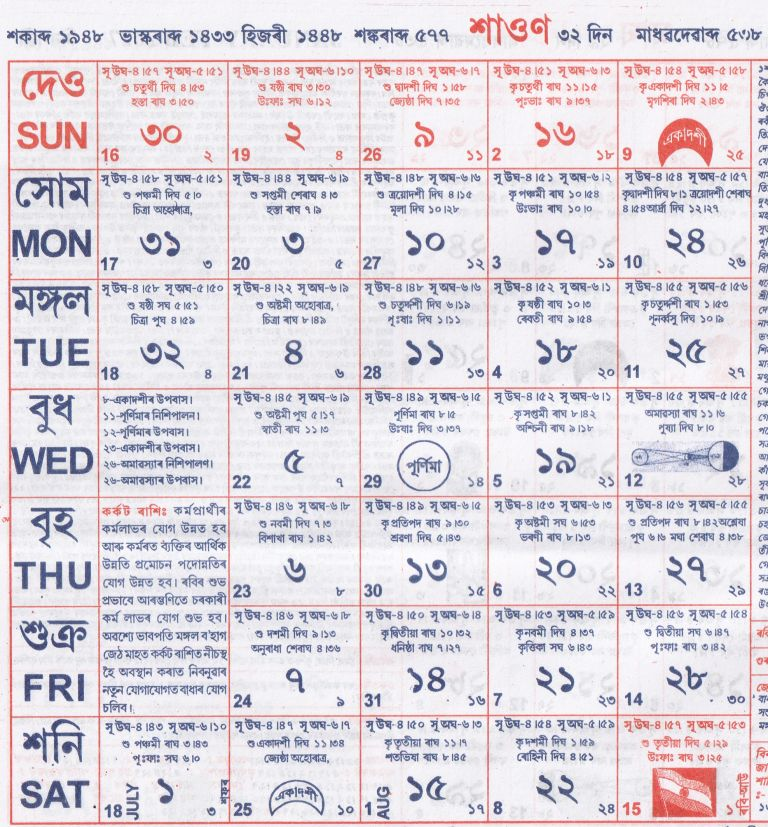

<table style="margin-left:auto; margin-right:auto; max-width:700px; border-collapse:collapse;" border="1" cellpadding="10">
  <tbody>

    <!-- Title -->
    <tr>
      <td>
        <h1 style="text-align:center;">শাওণ</h1>
      </td>
    </tr>

    <!-- Image -->
    <tr>
      <td style="text-align:center;">
        
      </td>
    </tr>

    <!-- Main Content -->
    <tr>
      <td style="text-align:justify; line-height:1.6;">

        <p><strong>১ শাওণ:</strong> বিভিন্ন সত্ৰত তিথি পালন।</p>

        <p><strong>২–৪ শাওণ:</strong> সত্ৰ আৰু পণ্ডিতসকলৰ তিথি অনুষ্ঠান।</p>

        <p><strong>৫ শাওণ:</strong> সাহিত্যিক ৰংমন ৰবীন দেৱৰ স্মৃতি দিৱস।</p>

        <p><strong>৬ শাওণ:</strong> নামঘৰ প্ৰতিষ্ঠা দিৱস আৰু তিথি অনুষ্ঠান।</p>

        <p><strong>৯–১১ শাওণ:</strong> বিভিন্ন সত্ৰত তিথি আৰু নামকীৰ্ত্তন।</p>

        <p><strong>১২ শাওণ:</strong> গুৰু পূৰ্ণিমা (ব্যাস পূৰ্ণিমা)।</p>

        <p><strong>১৩–১৬ শাওণ:</strong> বিভিন্ন ধৰ্মীয় তিথি আৰু অনুষ্ঠান।</p>

        <p><strong>১৭ শাওণ:</strong> নাগ পঞ্চমী, মনসা পূজা আৰু অষ্টনাগ পূজা।</p>

        <p><strong>১৯ শাওণ:</strong> লোকপ্ৰিয় গোপীনাথ বৰদলৈৰ স্মৃতি দিৱস।</p>

        <p><strong>২০–২৩ শাওণ:</strong> বিভিন্ন সত্ৰত তিথি অনুষ্ঠান, ভাৰত ত্যাগ দিৱস পালন।</p>

        <p><strong>২৪–২৫ শাওণ:</strong> সত্ৰ আৰু জ্যোতিষীসকলৰ তিথি অনুষ্ঠান।</p>

        <p><strong>২৬ শাওণ:</strong> সূৰ্য্যগ্ৰহণ (ভাৰতত অদৃশ্য)।</p>

        <p><strong>২৭ শাওণ:</strong> বীৰ টিকেন্দ্ৰজিতৰ স্মৃতি দিৱস।</p>

        <p><strong>২৯ শাওণ:</strong> ভাৰতৰ স্বাধীনতা দিৱস।</p>

        <p><strong>৩০–৩২ শাওণ:</strong> দেৱধ্বনি উৎসৱ, মাৰৈ পূজা আদি।</p>

      </td>
    </tr>

    <!-- Astrological Info -->
    <tr>
      <td>
        <p><strong>ৰবিশুদ্ধি:</strong> ১৩ শাওণৰ পৰা বৃষ, মিথুন, কন্যা, তুলা, বৃশ্চিক আৰু মীন ৰাশিৰ।</p>

        <p><strong>গুৰুশুদ্ধি:</strong> মিথুন, কন্যা, বৃশ্চিক, মকৰ আৰু মীন ৰাশিৰ।</p>
      </td>
    </tr>

    <!-- Astrology Notes -->
    <tr>
      <td style="text-align:justify;">
        <p><strong>জ্যোতিষতত্ত্ব:</strong> এই মাহত জন্ম লোৱা ব্যক্তি ধনবান, দূৰদৰ্শী, লোকপ্ৰিয় আৰু দাতা স্বভাৱৰ হয়। গৃহাৰম্ভ কৰিলে পশ্চিম দুৱৰী কৰা শুভ।</p>
      </td>
    </tr>

    <!-- Muhurat -->
    <tr>
      <td>
        <p><strong>শুভ দিনসমূহ:</strong></p>
        <ul>
          <li>বিবাহ: ২, ৩, ৪, ৬, ১২, ১৩, ১৬, ১৭</li>
          <li>পঞ্চামৃত: ২, ৭, ৯, ২৭</li>
          <li>সাধভক্ষণ: ১, ৯</li>
          <li>নামকৰণ: ১, ১২, ১৩, ১৪, ১৭, ১৯, ৩১</li>
          <li>অন্নপ্ৰাশন: ২, ৭</li>
          <li>গৃহপ্ৰৱেশ: ১৩–১৮</li>
          <li>হালখাতা: ৮, ১২, ২২, ২৩, ২৬</li>
        </ul>
      </td>
    </tr>

  </tbody>
</table>
